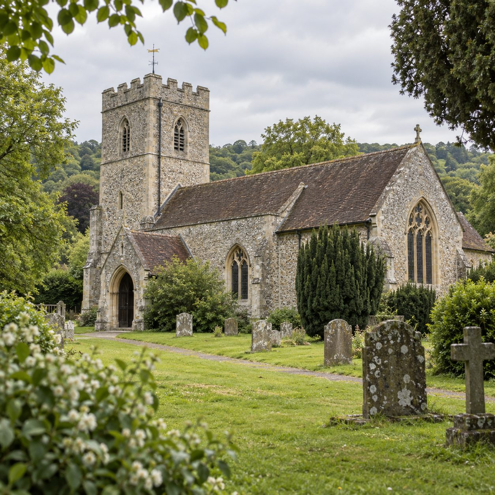
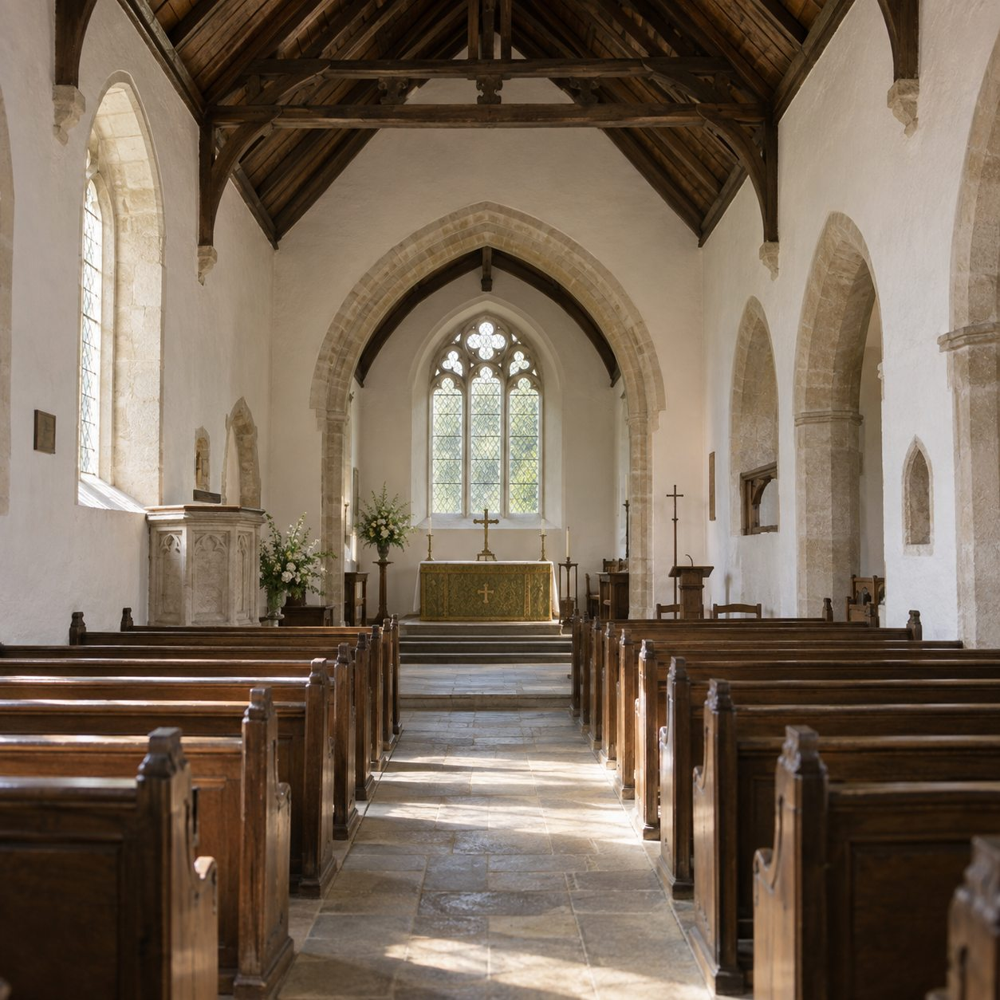
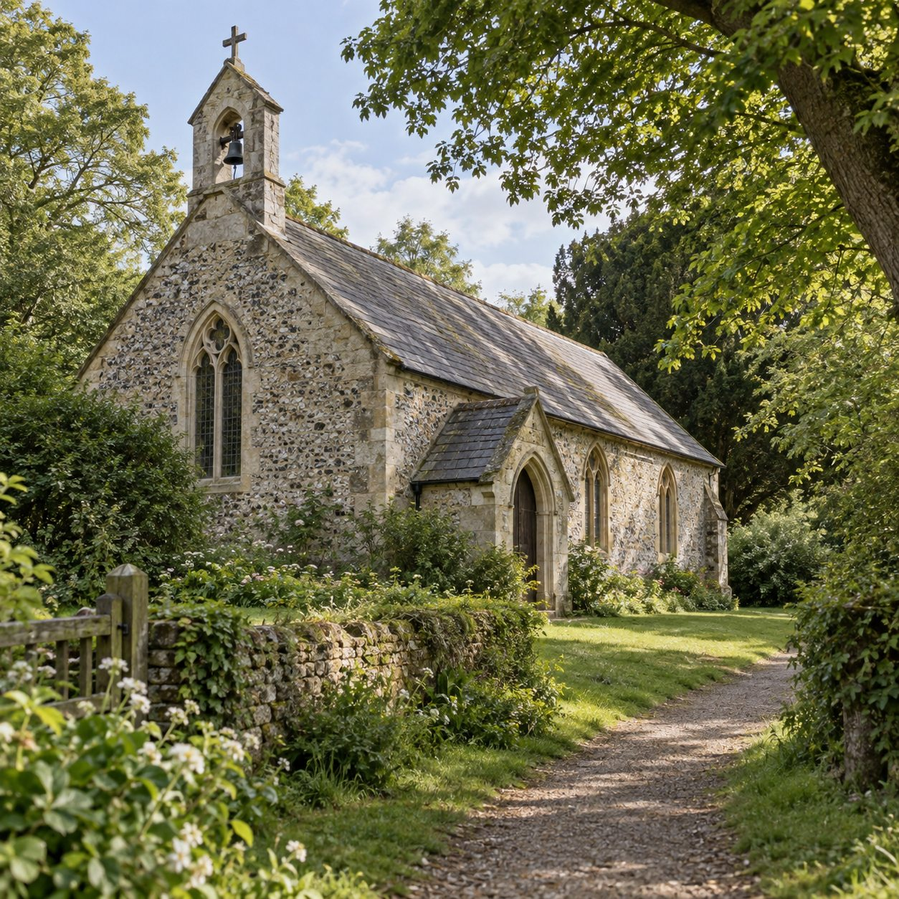
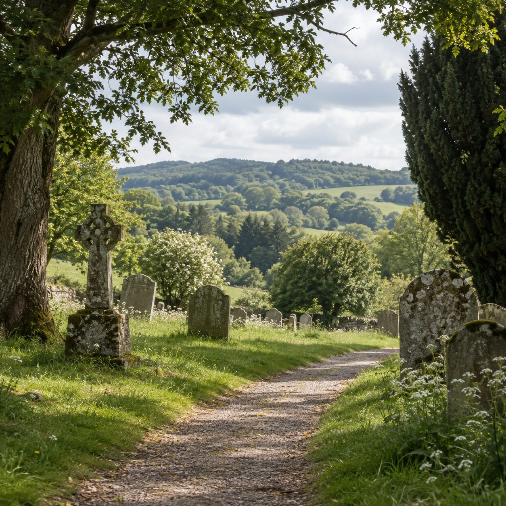
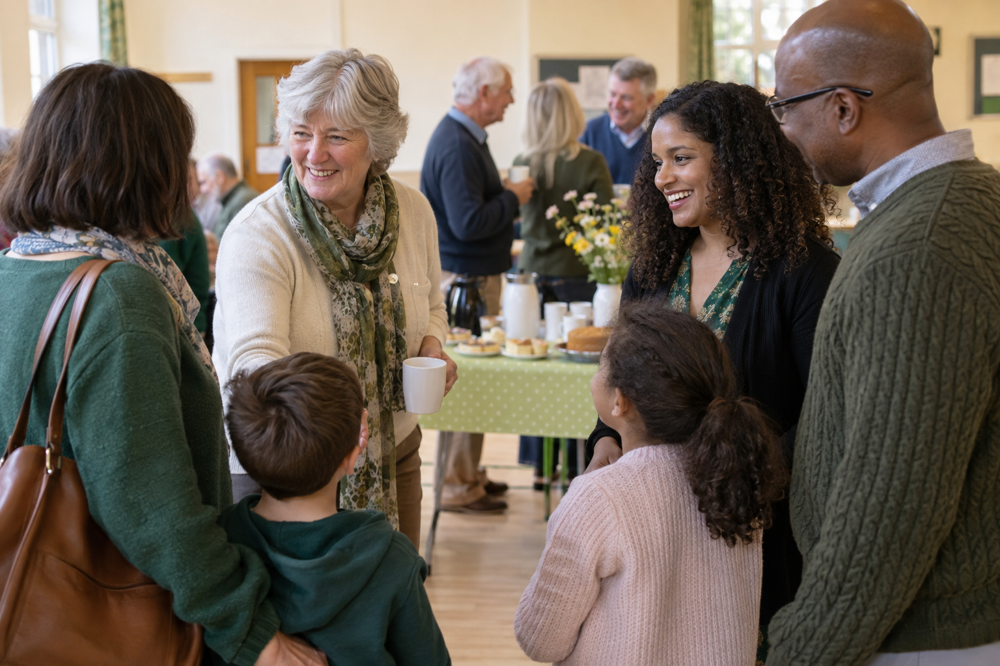

Our parish · Mickleham & Westhumble
About Our Parish
Welcome to the Parish of Mickleham.
Our parish brings together the villages of Mickleham and Westhumble, situated in the beautiful Surrey Hills. We are part of the Church of England and seek to be a welcoming Christian community for people of all ages and backgrounds.

This page combines example copy with AI-generated illustrative photographs. They do not depict the actual church, its buildings, churchyard or parishioners. The church can replace these images and sample text with official material supplied by its photographer and parish team without changing the page design.
Who we are
A parish with a place for you
Our two village churches are part of one parish and one Christian community. We gather in Mickleham and Westhumble, and welcome people who are exploring faith as well as those who have been part of church life for many years.
Explore our story“Inspired by God's Love, we seek to grow spiritually, make Jesus Christ known and be a loving, inclusive and welcoming church, at the heart of the community.”
Our parish vision
Mickleham
St Michael and All Angels, Mickleham
At the heart of Mickleham stands St Michael and All Angels, a historic church with a Christian presence on the site going back more than a thousand years.
The church is Grade II* listed and has important medieval parts, including the nave, south aisle, chancel and west tower.
The church remains a living place of Christian worship and community life today.
Read our history
Westhumble
Westhumble Chapel
Our parish also includes the Chapel of Ease at Westhumble, serving the local community of Westhumble.
The chapel provides a quieter setting for worship and prayer and forms an important part of our parish community.
Learn about Westhumble Chapel
Together in parish life
Our Community
Our church community includes people of different ages and backgrounds. Together we worship, pray, learn, support one another and seek to serve our local community.
Whether you have been part of church life for many years, are returning to church, or have never been to church before, you are welcome.
Discover Church Life
People and events
Life together
This example demonstrates how a community photograph could bring a parish story to life. The people shown are generated for this website demonstration; they are not parishioners and the scene is not a real event.
Explore Church Community
Faith through the centuries
Our Story
Christian worship has taken place at this site for more than a thousand years. The history of St Michael and All Angels is closely connected with the history of Mickleham itself.
Early medieval period
A longstanding place of worship
A church has stood on this site for many centuries.
Domesday Book · 1086
Recorded in Domesday
A church at Mickleham is recorded in the Domesday Book.
Medieval period
Parts of the present church
Important parts of the present church date from the medieval period.
Today
A living parish
St Michael and All Angels remains a living church serving Mickleham and Westhumble.
You are welcome
Come and Visit Us
Everyone is welcome to visit our churches, whether you are familiar with church life or simply curious to find out more.
St Michael's & All Angels Church · Old London Road · Mickleham, Dorking · Surrey RH5 6DU · England